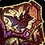
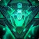

رفع مشکل Tooltip Bonus Roll و هاتفیکسهای بیشتر Labyrinth در پچ ۱۲.۱.۵
بلزارد امروز هاتفیکسهایی منتشر کرده که شامل رفع باگهای Labyrinth و اصلاح نمایش Tooltip Bonus Roll است.

حالا Tooltip Bonus Roll بهدرستی آیتمهای باقیمانده از باس را نشان میدهد.
چند سناریو در Labyrinth رفع مشکل شدهاند. بازیکنان اکنون میتوانند ۴ Jan'alai Tears را همزمان در Labyrinth حمل کنند.
بازیکنان میتوانند با صحبت با Kinduru در De Empire's Rest antechamber در حین سناریوی Kindo'jan از Labyrinth خارج شوند. مشکل استفاده از L00T RAID-R Minis در گروه داخل Labyrinth برطرف شده است.
اهرم شروع سناریوی A Golden Opportunity در Labyrinth of Kindo'jan اکنون برای بازیکنان سطح ۸۰ و بالاتر قابل استفاده است.
ظرفیت Carrying a Jan'alai Tear buff به ۴ stack افزایش یافته (قبلاً ۱). مشکل despawn شدن Pit Boss در سناریوی Returning the Bounty هنگام خروج از combat رفع شده است.
اثر Seriously Sharp Seashell از  
لیست پیشنمایش آیتمهای  Nebulous Voidcache bonus roll حالا بهدرستی بهروزرسانی میشود. این فقط مشکل نمایش بود و بر واجد شرایط بودن آیتمها تأثیری نداشت.
Nebulous Voidcache bonus roll حالا بهدرستی بهروزرسانی میشود. این فقط مشکل نمایش بود و بر واجد شرایط بودن آیتمها تأثیری نداشت.
Sanctified Ground هنگام اعمال روی همتیمیها دیگر channeled spellهایی مانند Divine Hymn را قطع نمیکند.